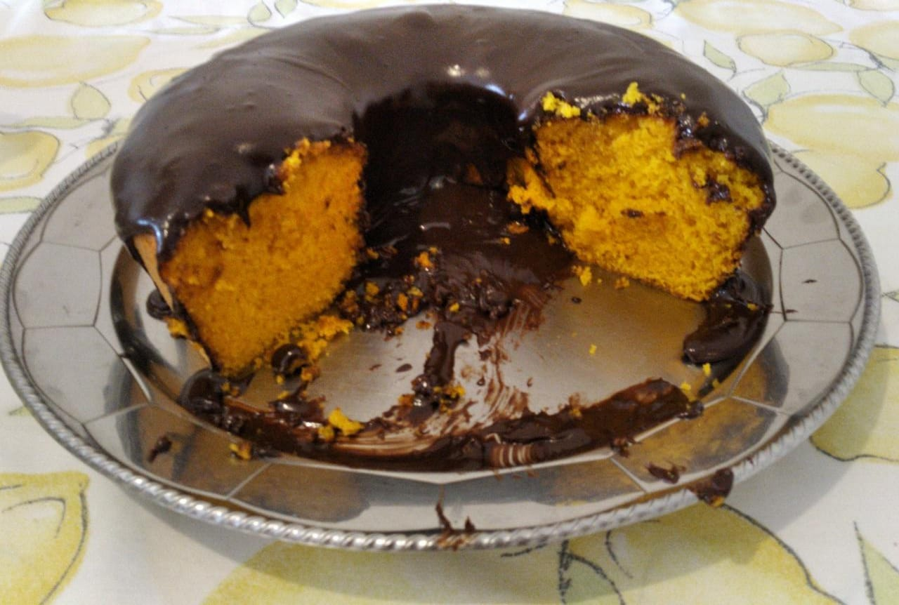

Na receita de hoje, faremos um delicioso bolo de cenoura! Esse prato pode servir até 4 pessoas e é uma ótima opção de lanche para quem prefere viver uma rotina mais saudável sem abrir mão de um docinho.